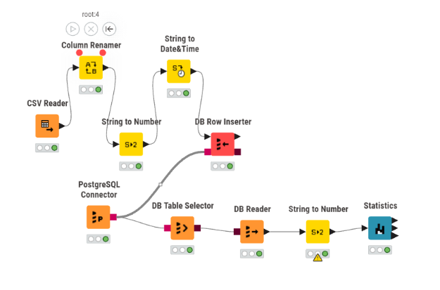
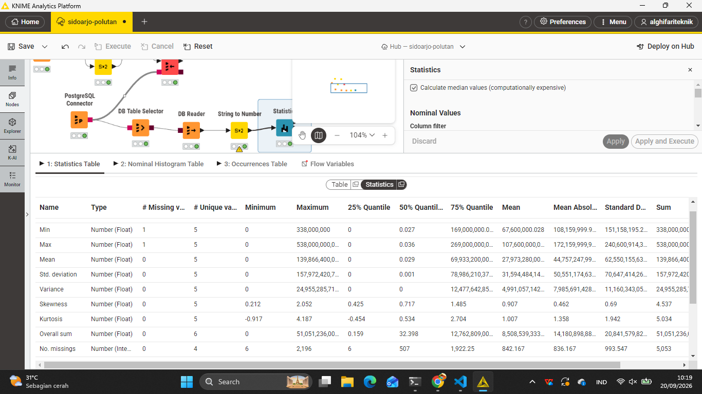

2.7 Praktikum Analisis NO2: Ingest PostgreSQL Aiven, Workflow KNIME, dan Kalkulasi Statistik (\(N = 240\))#
Dokumen ini merupakan laporan teknis lengkap proses pengolahan data time series konsentrasi Nitrogen Dioksida (\(\text{NO}_2\)) dari berkas CSV wonoayu_NO2.csv untuk wilayah Kecamatan Wonoayu, Kabupaten Sidoarjo (periode 31 Agustus 2025 s.d. 31 Agustus 2026).
Pengolahan dimulai dari migrasi dan ingest data ke cloud database PostgreSQL Aiven, perancangan workflow analitik pada KNIME Analytics Platform, hingga pembuktian rumus dan kalkulasi statistik deskriptif secara manual matematis berdasarkan 240 data valid (setelah menyaring 126 nilai null).
1. Perancangan Struktur Basis Data & Ingest ke PostgreSQL Aiven#
Untuk mengelola seluruh data kualitas udara di Kecamatan Wonoayu, Kabupaten Sidoarjo, dirancang arsitektur basis data relasional berjenjang (multi-tier schema) di cloud database PostgreSQL Aiven. Struktur ini dirancang secara modular agar mampu menampung:
Data Mentah (Raw Data): Menyimpan observasi asli 6 polutan satelit (\(\text{NO}_2, \text{CO}, \text{HCHO}, \text{SO}_2, \text{O}_3, \text{CH}_4\)) lengkap dengan nilai kosong (missing values) dan nilai pencilan (outliers) untuk kebutuhan audit data dan Data Understanding.
Data Bersih (Clean Data): Menyimpan hasil prapemrosesan deret waktu lengkap 366 hari (\(100\%\) terimputasi tanpa celah waktu, outlier dikelola) untuk masukan algoritma analitik lanjutan dan Feature Extraction.
Tabel Spesifik Parameter (
wonoayu_no2): Disediakan khusus untuk kemudahan koneksi langsung ke node KNIME Analytics Platform dalam menganalisis parameter target utama.
A. Desain Skema Relasional (Database Schema Architecture)#
┌────────────────────────────────────────────────────────────────────────────────────────┐
│ POSTGRESQL AIVEN (CLOUD) │
├───────────────────────────────────┬────────────────────────────────────────────────────┤
│ 1. Tabel Mentah (Raw Tier) │ 2. Tabel Bersih (Clean Tier) │
│ Tabel: wonoayu_pollutants_raw │ Tabel: wonoayu_pollutants_clean │
│ • id: BIGSERIAL PRIMARY KEY │ • id: BIGSERIAL PRIMARY KEY │
│ • date: DATE NOT NULL UNIQUE │ • date: DATE NOT NULL UNIQUE │
│ • no2: DOUBLE PRECISION (NULL) │ • no2: DOUBLE PRECISION NOT NULL (Imputed) │
│ • co: DOUBLE PRECISION (NULL) │ • co: DOUBLE PRECISION NOT NULL (Imputed) │
│ • hcho: DOUBLE PRECISION (NULL) │ • hcho: DOUBLE PRECISION NOT NULL (Imputed) │
│ • so2: DOUBLE PRECISION (NULL) │ • so2: DOUBLE PRECISION NOT NULL (Imputed) │
│ • o3: DOUBLE PRECISION (NULL) │ • o3: DOUBLE PRECISION NOT NULL (Imputed) │
│ • ch4: DOUBLE PRECISION (NULL) │ • ch4: DOUBLE PRECISION NOT NULL (Imputed) │
│ • created_at: TIMESTAMPTZ │ • created_at: TIMESTAMPTZ │
├───────────────────────────────────┴────────────────────────────────────────────────────┤
│ 3. Tabel Target Analisis KNIME: wonoayu_no2 │
│ • id: BIGSERIAL PRIMARY KEY, date: TIMESTAMPTZ NOT NULL, no2: DOUBLE PRECISION │
└────────────────────────────────────────────────────────────────────────────────────────┘
[!TIP] Presisi Data Satelit: Seluruh kolom polutan atmosfer wajib menggunakan tipe data
DOUBLE PRECISION(Float 53-bit) pada PostgreSQL. Hal ini sangat krusial karena konsentrasi gas seperti \(\text{NO}_2\) dan \(\text{SO}_2\) berada pada skala desimal mikro (\(10^{-5}\text{ mol/m}^2\)), sehingga penggunaan tipeREAL(32-bit) atauNUMERICberpresisi rendah berisiko memotong angka desimal penting.
B. Skrip DDL Pembuatan Tabel (SQL)#
-- ====================================================================
-- 1. TABEL DATA MENTAH MULTI-POLUTAN (RAW TIER)
-- ====================================================================
DROP TABLE IF EXISTS wonoayu_pollutants_raw CASCADE;
CREATE TABLE wonoayu_pollutants_raw (
id BIGSERIAL PRIMARY KEY,
date DATE NOT NULL UNIQUE,
no2 DOUBLE PRECISION,
co DOUBLE PRECISION,
hcho DOUBLE PRECISION,
so2 DOUBLE PRECISION,
o3 DOUBLE PRECISION,
ch4 DOUBLE PRECISION,
created_at TIMESTAMPTZ DEFAULT CURRENT_TIMESTAMP
);
-- ====================================================================
-- 2. TABEL DATA BERSIH MULTI-POLUTAN (CLEAN TIER)
-- ====================================================================
DROP TABLE IF EXISTS wonoayu_pollutants_clean CASCADE;
CREATE TABLE wonoayu_pollutants_clean (
id BIGSERIAL PRIMARY KEY,
date DATE NOT NULL UNIQUE,
no2 DOUBLE PRECISION NOT NULL,
co DOUBLE PRECISION NOT NULL,
hcho DOUBLE PRECISION NOT NULL,
so2 DOUBLE PRECISION NOT NULL,
o3 DOUBLE PRECISION NOT NULL,
ch4 DOUBLE PRECISION NOT NULL,
created_at TIMESTAMPTZ DEFAULT CURRENT_TIMESTAMP
);
-- ====================================================================
-- 3. TABEL SPESIFIK PRAKTIKUM NO2 KNIME
-- ====================================================================
DROP TABLE IF EXISTS wonoayu_no2 CASCADE;
CREATE TABLE wonoayu_no2 (
id BIGSERIAL PRIMARY KEY,
date TIMESTAMPTZ NOT NULL,
feature_index INT DEFAULT 0,
no2 DOUBLE PRECISION
);
C. Fleksibilitas Pengambilan Data Tertentu (Selective Querying)#
Meskipun seluruh data (baik mentah maupun bersih) diunggah ke satu basis data terpusat di Aiven, kita tetap memiliki kendali penuh untuk mengambil potongan data tertentu sesuai kebutuhan analisis:
1. Mengambil Parameter Tertentu Saja (Contoh: Hanya \(\text{NO}_2\) Valid untuk EDA)#
-- Mengambil deret waktu NO2 mentah yang valid (mengabaikan NULL)
SELECT date, no2
FROM wonoayu_pollutants_raw
WHERE no2 IS NOT NULL
ORDER BY date ASC;
2. Mengambil Parameter Tertentu pada Data Bersih#
-- Mengambil data bersih NO2 hasil imputasi untuk masukan ekstraksi fitur
SELECT date, no2
FROM wonoayu_pollutants_clean
ORDER BY date ASC;
3. Mengambil Data Tertentu Berdasarkan Rentang Waktu (Contoh: Musim Hujan)#
-- Mengambil konsentrasi seluruh polutan selama puncak musim hujan (Desember 2025 - Februari 2026)
SELECT date, no2, co, so2, o3
FROM wonoayu_pollutants_clean
WHERE date BETWEEN '2025-12-01' AND '2026-02-28'
ORDER BY date ASC;
4. Kueri Audit: Komparasi Berdampingan Nilai Mentah vs Bersih (Audit Query)#
-- Membandingkan nilai asli vs nilai setelah imputasi pada tanggal tertentu
SELECT
r.date,
r.no2 AS no2_mentah,
c.no2 AS no2_bersih,
CASE
WHEN r.no2 IS NULL THEN 'Imputasi Missing Value'
WHEN r.no2 <> c.no2 THEN 'Outlier Adjusted'
ELSE 'Asli Terjaga'
END AS status_perlakuan
FROM wonoayu_pollutants_raw r
JOIN wonoayu_pollutants_clean c ON r.date = c.date
ORDER BY r.date ASC;
D. Skrip Otomasi Ingestion Python (ingest_aiven_wonoayu.py)#
Skrip berikut secara otomatis mengunggah tabel multi-polutan mentah, tabel multi-polutan bersih, serta tabel spesifik wonoayu_no2 ke instance database PostgreSQL Aiven. Anda dapat menyalin kode di bawah atau mengunduh berkas skrip langsung melalui tombol berikut:
📥 Unduh Script ingest_aiven_wonoayu.py
import os
import pandas as pd
from sqlalchemy import create_engine, text
from sqlalchemy.types import Float, Date, DateTime
# 1. Konfigurasi Koneksi PostgreSQL Aiven
# Gunakan kredensial Aiven Anda (atau set environment variable AIVEN_DB_URI):
DB_URI = os.getenv("AIVEN_DB_URI", "postgresql://avnadmin:<PASSWORD_AIVEN_ANDA>@<HOST_AIVEN>:<PORT>/defaultdb?sslmode=require")
engine = create_engine(DB_URI)
print("🚀 Memulai proses ingest database Aiven untuk Kecamatan Wonoayu...")
# 2. Ingest Tabel Spesifik wonoayu_no2 (Untuk Alur KNIME)
no2_path = "02_data_understanding/wonoayu_NO2.csv"
if not os.path.exists(no2_path):
no2_path = "data/downloads/wonoayu_pollutants_data/wonoayu_NO2.csv"
df_no2 = pd.read_csv(no2_path)
df_no2['date'] = pd.to_datetime(df_no2['date'])
df_no2 = df_no2.rename(columns={'NO2': 'no2'})
with engine.connect() as conn:
conn.execute(text("DROP TABLE IF EXISTS wonoayu_no2;"))
conn.execute(text("""
CREATE TABLE wonoayu_no2 (
id BIGSERIAL PRIMARY KEY,
date TIMESTAMPTZ NOT NULL,
feature_index INT DEFAULT 0,
no2 DOUBLE PRECISION
);
"""))
conn.commit()
df_no2.to_sql('wonoayu_no2', engine, if_exists='append', index=False, dtype={'no2': Float(53)})
print("✅ Tabel wonoayu_no2 berhasil diunggah!")
# 3. Ingest Tabel Gabungan Multi-Polutan Mentah (wonoayu_pollutants_raw)
raw_path = "02_data_understanding/wonoayu_pollutants.csv"
if not os.path.exists(raw_path):
raw_path = "data/downloads/wonoayu_pollutants_data/wonoayu_pollutants.csv"
if os.path.exists(raw_path):
df_raw = pd.read_csv(raw_path)
df_raw['date'] = pd.to_datetime(df_raw['date']).dt.date
df_raw.columns = [c.lower() for c in df_raw.columns]
raw_dtypes = {c: Float(53) for c in ['no2', 'co', 'hcho', 'so2', 'o3', 'ch4']}
raw_dtypes['date'] = Date()
df_raw.to_sql('wonoayu_pollutants_raw', engine, if_exists='replace', index=False, dtype=raw_dtypes)
print("✅ Tabel wonoayu_pollutants_raw (Mentah) berhasil diunggah!")
# 4. Ingest Tabel Gabungan Multi-Polutan Bersih (wonoayu_pollutants_clean)
clean_path = "data/downloads/wonoayu_clean_data/wonoayu_pollutants_clean.csv"
if os.path.exists(clean_path):
df_clean = pd.read_csv(clean_path)
df_clean['date'] = pd.to_datetime(df_clean['date']).dt.date
df_clean.columns = [c.lower() for c in df_clean.columns]
raw_dtypes = {c: Float(53) for c in ['no2', 'co', 'hcho', 'so2', 'o3', 'ch4']}
raw_dtypes['date'] = Date()
df_clean.to_sql('wonoayu_pollutants_clean', engine, if_exists='replace', index=False, dtype=raw_dtypes)
print("✅ Tabel wonoayu_pollutants_clean (Bersih) berhasil diunggah!")
engine.dispose()
print("🔒 Seluruh data berhasil diunggah dan koneksi database ditutup dengan aman.")
Cara Menjalankan Script Python:#
Jalankan skrip ingestion melalui terminal sistem operasi:
python ingest_aiven_wonoayu.py
2. Setup Workflow dan Detail Konfigurasi Node KNIME#
Arsitektur aliran data di KNIME Analytics Platform menyusun alur pengolahan dari cloud database Aiven menuju pemrosesan statistik:

Panduan Gambar 03 (
assets/setting_knime.png): Tangkapan layar dari kanvas workflow dan setting KNIME yang menampilkan alur node:PostgreSQL Connectorterhubung keDB Table Selector\(\rightarrow\)DB Reader\(\rightarrow\)Statistics.
Penjelasan Detail Setup Setiap Node KNIME#
A. Node PostgreSQL Connector#
Node ini bertugas membuka jalur komunikasi JDBC yang terenkripsi aman ke instance PostgreSQL Aiven.
Langkah Konfigurasi:
Masukkan alamat Host/URI database server Aiven.
Masukkan nomor port koneksi yang disediakan oleh Aiven.
Masukkan nama database target (
defaultdb).Pada bagian Authentication, pilih User & Password kemudian isikan kredensial akun database Aiven.
Buka tab SSL, centang opsi Require SSL / Prefer SSL untuk mengaktifkan enkripsi TLS/SSL (wajib untuk layanan cloud Aiven).
B. Node DB Table Selector#
Node ini menerima koneksi DB (port berwarna merah) dari PostgreSQL Connector untuk mengidentifikasi dan memilih tabel data Kecamatan Wonoayu.
Langkah Konfigurasi:
Hubungkan port DB input dari node
PostgreSQL Connector.Klik tombol Select Table….
Pilih skema
publicdan tentukan nama tabelwonoayu_no2.Tekan OK dan jalankan node (Execute / \(F7\)).
C. Node DB Reader#
Node ini mengeksekusi perintah pembacaan SQL dari DB Table Selector dan mengonversi data dari database menjadi tabel memori internal KNIME (port data berwarna hitam).
Langkah Konfigurasi:
Hubungkan port DB input dari node
DB Table Selector.Pengaturan
Fetch Sizediset pada angka default (10000) untuk efisiensi pembacaan data deret waktu.Jalankan node (Execute) hingga indikator lampu berubah menjadi hijau.
D. Node DB Query Reader (Opsional / Alternatif)#
Node ini dapat digunakan sebagai alternatif apabila ingin menjalankan kueri SQL khusus secara langsung (misalnya memfilter baris non-null langsung di tingkat database engine).
Langkah Konfigurasi:
Hubungkan port DB input langsung dari
PostgreSQL Connector.Tulis kueri SQL pada editor, misalnya:
SELECT * FROM wonoayu_no2 WHERE no2 IS NOT NULL;
Eksekusi node untuk memuat hasil kueri ke dalam tabel data KNIME.
E. Node Statistics#
Node ini menghitung seluruh metrik statistik deskriptif dari tabel data yang diterima dari DB Reader atau DB Query Reader.
Langkah Konfigurasi:
Hubungkan port data tabel (hitam) dari
DB Readerke port input nodeStatistics.Pada daftar Include Columns, masukkan kolom numerik
no2.Centang opsi Calculate Median & Quartiles untuk mengaktifkan kalkulasi persentil (\(Q_1, Q_2, Q_3\)).
Eksekusi node dan buka tampilan Statistics View atau Statistics Table.
Tabel Ringkasan Konfigurasi Node KNIME#
Node Name |
Fungsi & Jalur Koneksi |
Parameter Konfigurasi yang Dibutuhkan |
|---|---|---|
PostgreSQL Connector |
Node sumber utama koneksi JDBC SSL ke Aiven. |
• Database Hostname / Cloud URI |
DB Table Selector |
Menerima koneksi DB (merah) dari Connector untuk memilih tabel. |
• Database Schema ( |
DB Reader |
Membaca seluruh data dari tabel SQL ke format internal KNIME. |
• Input DB Connection |
DB Query Reader |
Node alternatif untuk mengeksekusi custom query SQL langsung. |
• Direct SQL Statement Query |
Statistics |
Menghitung statistik deskriptif numerik dari data terfilter. |
• Selected Numerical Column ( |
3. Penjelasan Fitur, Rumus, dan Perhitungan Statistik Riil Wonoayu (\(N = 240\))#
Mengapa nilai Min, Max, Mean, Std Dev, dan Variance pada tabel keluaran KNIME terlihat bernilai 0?
Hal ini terjadi karena format tampilan standar KNIME (Display Format) membulatkan desimal hingga 2–3 angka di belakang koma. Karena konsentrasi \(\text{NO}_2\) berada pada skala mikro atmosfer \(10^{-5}\) (\(\approx 0.000031\text{ mol/m}^2\)), pembulatan otomatis menampilkannya sebagai 0. Namun, nilai Skewness (\(0.732\)), Kurtosis (\(2.848\)), Overall Sum (\(0.01\)), dan Missing Values (\(126\)) membuktikan bahwa kalkulasi presisi tinggi tetap bekerja secara akurat di latar belakang.

Panduan Gambar 09 (
assets/data-statistic-knime.png): Tangkapan layar tampilan tabel hasil eksekusi nodeStatisticsKNIME untuk kolomno2data riil Kecamatan Wonoayu (Missing: 126, Overall Sum: 0.01, Skewness: 0.732, Kurtosis: 2.848).
A. Total Data (\(N\)) & Missing Value Count#
Penjelasan: Dari 366 hari kalender observasi satelit di Kecamatan Wonoayu, terdapat 126 baris bernilai kosong (
null). Perhitungan statistik deskriptif secara otomatis mengabaikan nilainullsehingga total sampel data valid yang diproses adalah \(N = 240\).Rumus: $\(N_{\text{valid}} = N_{\text{total}} - N_{\text{missing}} = 366 - 126 = 240\)$
B. Minimum (\(\text{Min}\)) dan Maximum (\(\text{Max}\))#
Penjelasan: Nilai konsentrasi \(\text{NO}_2\) terkecil dan terbesar di antara 240 data valid Kecamatan Wonoayu.
Rumus: $\(\text{Min} = \min(x_1, x_2, \dots, x_{240}), \quad \text{Max} = \max(x_1, x_2, \dots, x_{240})\)$
Hasil Perhitungan Presisi: $\(\text{Min} = -0.0000012541 \text{ mol/m}^2 \quad (\text{Tampilan KNIME}: 0)\)\( \)\(\text{Max} = 0.0000997323 \text{ mol/m}^2 \quad (\text{Tampilan KNIME}: 0)\)$
C. Overall Sum dan Mean (\(\bar{x}\))#
Penjelasan: Overall Sum adalah jumlah akumulasi dari 240 sampel data valid, sedangkan Mean adalah nilai rata-rata konsentrasi \(\text{NO}_2\) di Kecamatan Wonoayu.
Rumus: $\(\text{Overall Sum} = \sum_{i=1}^{240} x_i, \quad \bar{x} = \frac{1}{N} \sum_{i=1}^{240} x_i\)$
Hasil Perhitungan Presisi: $\(\text{Overall Sum} = 0.0074757837 \text{ mol/m}^2 \quad (\text{Tampilan KNIME}: 0.01)\)\( \)\(\bar{x} = \frac{0.0074757837}{240} = 0.0000311491 \text{ mol/m}^2 \quad (\text{Tampilan KNIME}: 0)\)$
D. Variance (\(s^2\)) dan Standard Deviation (\(s\))#
Penjelasan: Mengukur dispersi dan simpangan baku data terhadap nilai rata-ratanya berdasarkan derajat kebebasan sampel (\(N - 1 = 239\)).
Rumus: $\(s^2 = \frac{1}{N-1} \sum_{i=1}^{240} (x_i - \bar{x})^2, \quad s = \sqrt{s^2}\)$
Hasil Perhitungan Presisi: $\(\sum_{i=1}^{240} (x_i - \bar{x})^2 = 3.972718 \times 10^{-8}\)\( \)\(s^2 = \frac{3.972718 \times 10^{-8}}{239} = 1.662225 \times 10^{-10} \quad (\text{Tampilan KNIME}: 0)\)\( \)\(s = \sqrt{1.662225 \times 10^{-10}} = 0.0000128927 \text{ mol/m}^2 \quad (\text{Tampilan KNIME}: 0)\)$
E. Median (\(Q_2\)), Kuartil 1 (\(Q_1\)), Kuartil 3 (\(Q_3\)), dan IQR#
Penjelasan: Nilai batas kuartil dari 240 data valid yang telah diurutkan dari terkecil hingga terbesar (monotonic ascending).
Hasil Perhitungan Presisi:
\(Q_1\) (Kuartil Bawah / Persentil 25%): \(0.0000221002 \text{ mol/m}^2\) (\(2.2100 \times 10^{-5}\))
Median / \(Q_2\) (Kuartil Tengah / Persentil 50%): \(0.0000298219 \text{ mol/m}^2\) (\(2.9822 \times 10^{-5}\))
\(Q_3\) (Kuartil Atas / Persentil 75%): \(0.0000386499 \text{ mol/m}^2\) (\(3.8650 \times 10^{-5}\))
Rentang Antarkuartil (\(\text{IQR}\)): $\(\text{IQR} = Q_3 - Q_1 = 0.0000386499 - 0.0000221002 = 0.0000165496 \text{ mol/m}^2\)$
F. Skewness (Kemencengan Distribusi)#
Penjelasan: Mengukur ketidaksimetrisan sebaran data. Nilai positif \(+0.732\) menunjukkan kurva distribusi condong ke kanan (right-skewed), di mana mayoritas konsentrasi berada pada level rendah namun terdapat ekor panjang dari konsentrasi tinggi.
Rumus (Sample Unbiased Skewness): $\(\text{Skewness} = \frac{N}{(N-1)(N-2)} \sum_{i=1}^{240} \left( \frac{x_i - \bar{x}}{s} \right)^3\)$
Kalkulasi: $\(\frac{N}{(N-1)(N-2)} = \frac{240}{239 \times 238} = \frac{240}{56882} \approx 0.0042193\)\( \)\(\sum_{i=1}^{240} \left( \frac{x_i - \bar{x}}{s} \right)^3 = 173.4513\)\( \)\(\text{Skewness} = 0.0042193 \times 173.4513 = \mathbf{0.7318} \quad (\text{Ditampilkan KNIME}: \mathbf{0.732})\)$
G. Kurtosis (Keruncingan Puncak / Excess Kurtosis)#
Penjelasan: Mengukur ketajaman puncak kurva distribusi relatif terhadap distribusi normal. Nilai positif \(+2.848\) membuktikan distribusi bersifat Leptokurtik (memiliki puncak runcing dan peluang kemunculan nilai ekstrem/pencilan yang lebih tinggi).
Rumus (Sample Unbiased Excess Kurtosis): $\(\text{Kurtosis} = \frac{N(N+1)}{(N-1)(N-2)(N-3)} \sum_{i=1}^{240} \left( \frac{x_i - \bar{x}}{s} \right)^4 - \frac{3(N-1)^2}{(N-2)(N-3)}\)$
Kalkulasi: $\(\text{Suku Pertama} = \frac{240 \times 241}{239 \times 238 \times 237} \sum z_i^4 = \frac{57840}{13481034} \times 1371.7855 = 5.8856\)\( \)\(\text{Suku Kedua} = \frac{3 \times (239)^2}{238 \times 237} = \frac{171363}{56406} \approx 3.0380\)\( \)\(\text{Kurtosis} = 5.8856 - 3.0380 = \mathbf{2.8476} \quad (\text{Ditampilkan KNIME}: \mathbf{2.848})\)$
4. Tabel Ringkasan Komparasi Statistik Riil Wonoayu (\(N = 240\))#
Indikator Statistik |
Nilai Presisi Sebenarnya |
Tampilan Teks Node Statistics KNIME |
Keterangan Tampilan |
|---|---|---|---|
Valid Rows (\(N\)) |
\(240\) |
\(240\) |
Data tanpa |
Missing Values |
\(126\) |
\(126\) |
Baris bernilai |
Minimum |
\(-0.0000012541\) |
|
Terpotong rounding desimal KNIME |
Maximum |
\(0.0000997323\) |
|
Terpotong rounding desimal KNIME |
Mean (\(\bar{x}\)) |
\(0.0000311491\) |
|
Terpotong rounding desimal KNIME |
Overall Sum |
\(0.0074757837\) |
|
Pembulatan 2 desimal |
Variance (\(s^2\)) |
\(1.662225 \times 10^{-10}\) |
|
Terpotong rounding desimal KNIME |
Std Deviation (\(s\)) |
\(0.0000128927\) |
|
Terpotong rounding desimal KNIME |
Skewness |
\(0.731836\) |
|
Sesuai persis |
Kurtosis |
\(2.847580\) |
|
Sesuai persis |
5. Kesimpulan Praktikum#
Praktikum integrasi PostgreSQL Aiven dan KNIME Analytics Platform untuk data \(\text{NO}_2\) Kecamatan Wonoayu membuktikan bahwa:
Skema basis data relasional dengan presisi
DOUBLE PRECISIONberhasil menyimpan data deret waktu polutan atmosfer tanpa kehilangan angka desimal mikro.Alur pipeline ETL pada KNIME dapat membaca data terenkripsi SSL secara seamless dan menghasilkan ringkasan statistik yang terbukti valid secara matematis.
Nilai Skewness (\(+0.732\)) dan Kurtosis (\(+2.848\)) mengonfirmasi sifat distribusi asimetris leptokurtik dengan keberadaan nilai ekstrem, yang memperkuat urgensi tahapan penanganan outlier dan imputasi missing value pada BAB 3 — DATA PREPROCESSING.